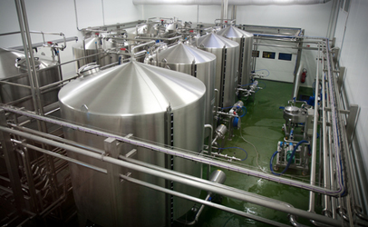

Pasteurização é de fundamental importância para eliminar a microbiota patogênica e parte da microbiota deteriorante do leite. 
O que é pasteurização?
A pasteurização é um processo no qual o alimento é aquecido a uma determinada temperatura, durante um determinado período de tempo e, logo em seguida, resfriado a uma temperatura muito inferior à anterior. Com o aquecimento e o resfriamento, os micro-organismos presentes no alimento são eliminados.
História da pasteurização
Até o século XIX, muitas infecções assolavam a humanidade e havia pouco avanço da ciência para que fosse possível combatê-las. Quando surgiu a pasteurização, este processo representou o primeiro grande passo do homem rumo ao combate às infecções naquele século.
Contato